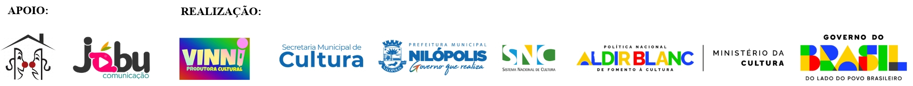

Mapa de Ruas
Nilópolis · fotos de rua e informações internas
Busque aqui
Todas as categorias
Mapa
colorir por
tipo de via
categoria
status
mapa base OSM
Informações gerais
Clique numa rua no mapa ou na lista para ver as fotos e preencher as informações.
